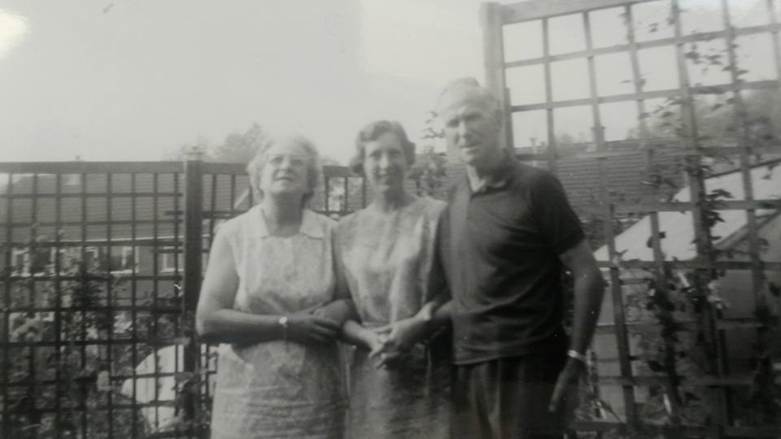
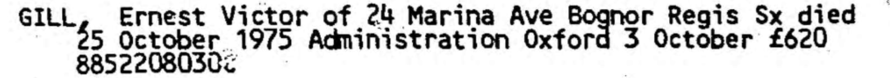
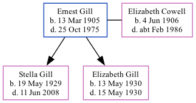

Ernest Victor Gill 1905 - 1975
[ Home ] | [ Calendar ] | [ Surnames Index ] | [ Family History ], Ernest Gill, the husband of Elizabeth Emma Cowell (the first cousin once-removed on the mother's side of Nigel Horne), was born in Kennington, Kent, England on Mar 13, 1905<span class="citation">1,2,3,4,5,6,7</span>, was baptized in Kenardington, Kent, England on Jun 25, 1905 and married Elizabeth (a dressmaker with whom he had 2 children: <a href="I945.html">Stella Patricia</a> and <a href="I944.html">Elizabeth</a>) in Westhampnett, Sussex, England on Apr 9, 1928<span class="citation">9</span>.</p><p>Throughout his life, he lived at 24 Murina Avenue, Bognor Regis, West Sussex, England on Sep 29, 1939<span class="citation">1</span> and in 1975. <p>He died on Oct 25, 1975 in Chichester, West Sussex<span class="citation">3,4,8</span>.
Children
- Stella Patricia was born on May 19, 1929
- Elizabeth was born on May 13, 1930
Citations
- 1939 Register - Findmypast (was the head of the household)
- England & Wales births 1837-2006 - Findmypast
- England & Wales deaths 1837-2007 - Findmypast
- England & Wales, Death Index: 1984-2005 Online publication - Provo, UT, USA: The Generations Network, Inc., 2007.Original data - General Register Office. England and Wales Civil Registration Indexes. London, England: General Register Office. © Crown copyright. Published by permission of the Cont
- England & Wales, FreeBMD Birth Index, 1837-1915 Online publication - Provo, UT, USA: The Generations Network, Inc., 2006.Original data - General Register Office. England and Wales Civil Registration Indexes. London, England: General Register Office. © Crown copyright. Published by permission of the Cont
- Volume: 2A; Page: 909; Line Number: 191; Record set: England & Wales births 1837-2006; Subcategory: Births & baptisms; Category: Birth, Marriage & Death (Parish Registers); Collections from: United Kingdom;
- Volume: 18; Page: 1563; Line number: 99; Record set: England & Wales deaths 1837-2007; Subcategory: Deaths & burials; Category: Birth, Marriage & Death (Parish Registers); Collections from: United Kingdom;
- Volume: 18; Page: 1563; Line number: 99; Record set: England & Wales deaths 1837-2007; Subcategory: Deaths & burials; Category: Birth, Marriage & Death (Parish Registers); Collections from: United Kingdom; Volume: 18; Page: 1563; Line number: 99; Record set: England & Wales deaths 1837-2007; Subcategory: Deaths & burials; Category: Birth, Marriage & Death (Parish Registers); Collections from: United Kingdom;
- England & Wales, Marriage Index: 1916-2005 Online publication - Provo, UT, USA: The Generations Network, Inc., 2009.Original data - General Register Office. England and Wales Civil Registration Indexes. London, England: General Register Office. © Crown copyright. Published by permission of the Cont
Media
Ernest Victor Gill - Elizabeth Emma Cowell - Stella Gill

Ernest Gill - probate

England & Wales marriages 1837-2008 - BMD/M/1928/2/AZ/000459/109
1939 Register Transcription - TNA-R39-2577-2577A-013-06
England & Wales deaths 1837-2007 - BMD/D/1975/4/AZ/000412/099
England & Wales births 1837-2006 - BMD/B/1905/2/AZ/000227/191
1939 Register - TNA/R39/2577/2577A/013/05
Kent Baptisms - PRS/KENT/BAP/0247656
Family Tree
Generated by Ged2Site. Last updated on Jul 20, 2025